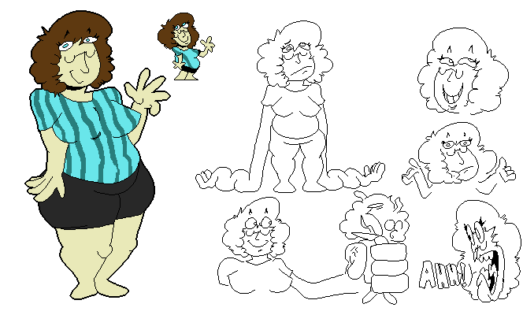

| sarah (h is optional honestly but you can do whatever) she's lowk a bum (and me!) stupid girl who is also a shapeshifter, thats right. i genuinely have no idea of how to write ocs specifically this one because well she's just me bro 😭😭😭😭 |
 | i have other ocs but i tried making refs for them and they suck because i didnt make said ocs so. just check my toyhouse ok (THERES ONLY ONE OC) |